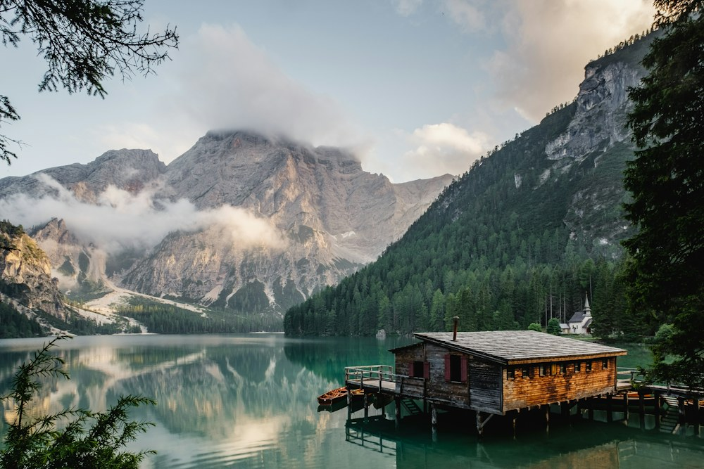
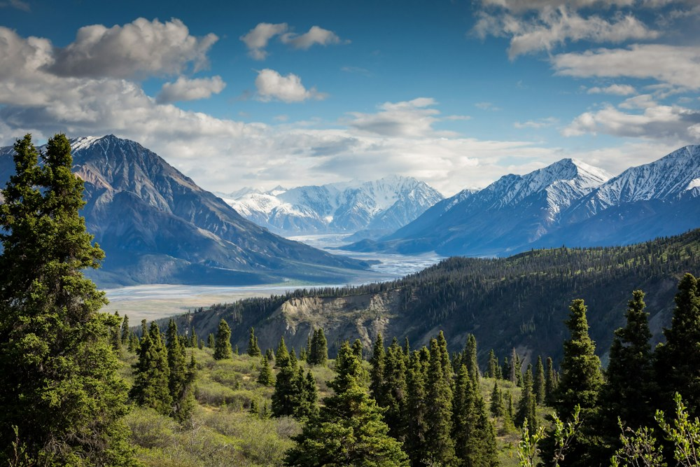
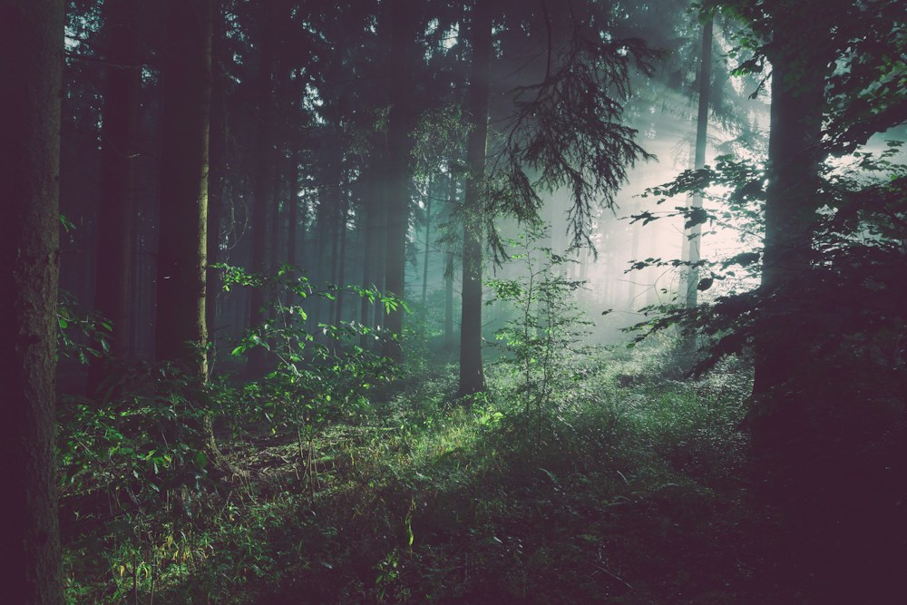
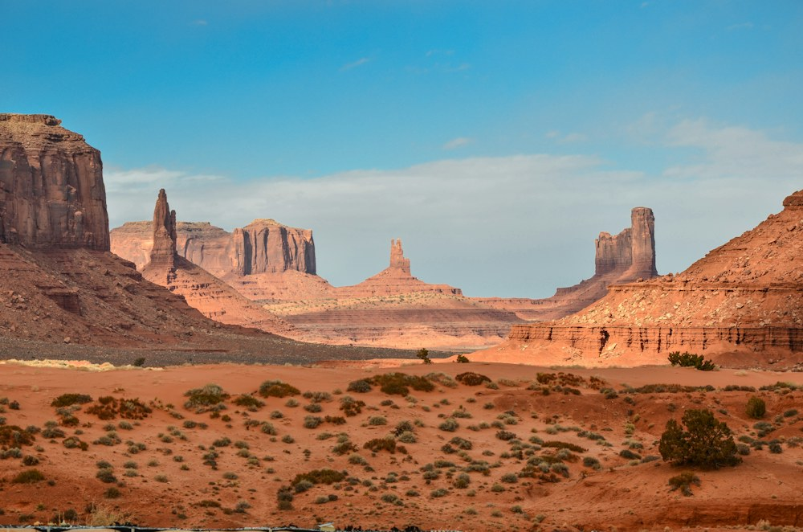
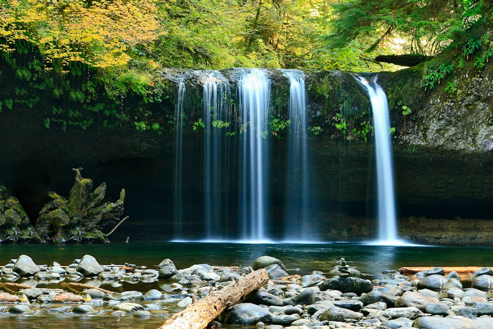
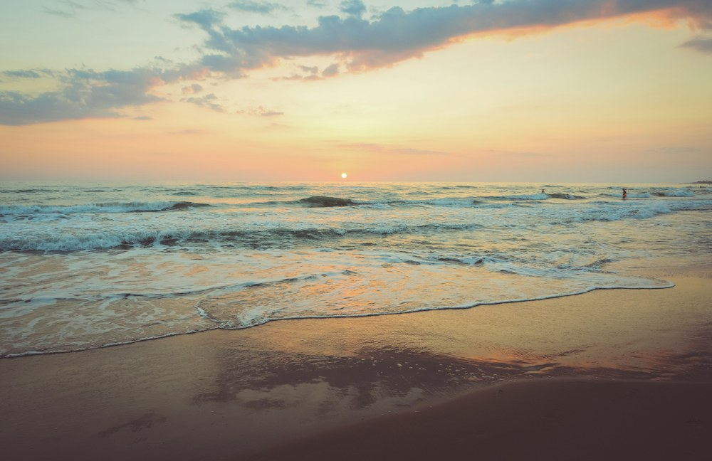
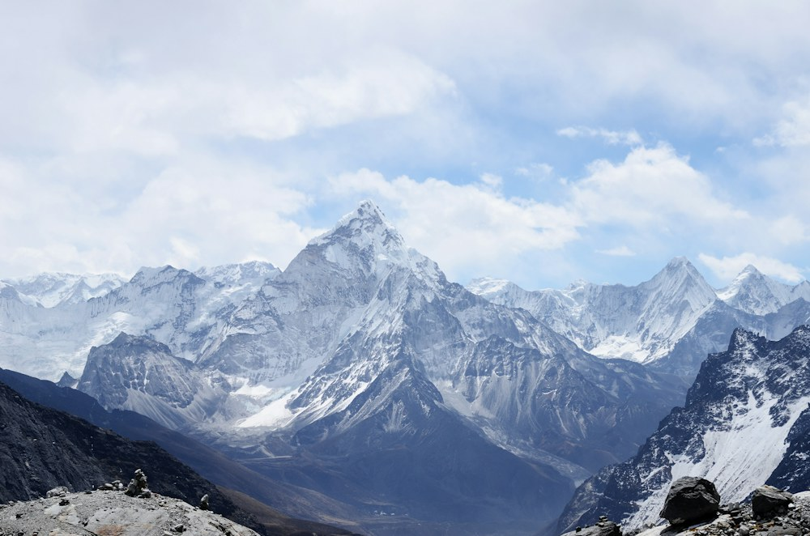
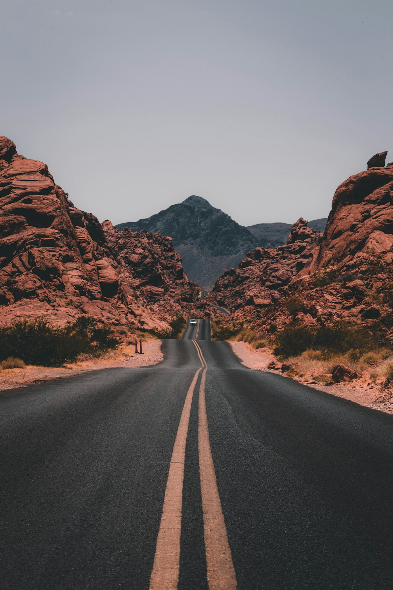
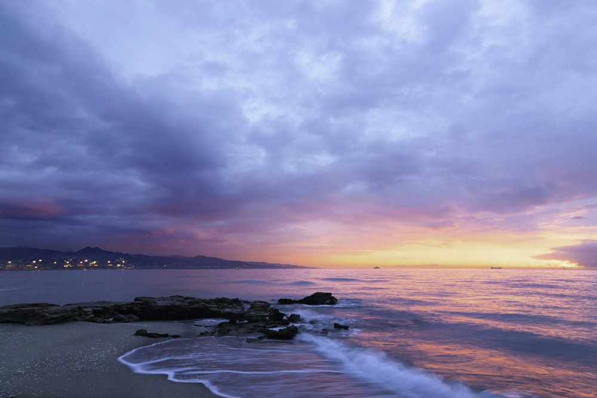

Travel from a quiet mountain lake to the open coast through nine photographs of the natural world.
Follow the changing terrain across forests, rocky deserts, rivers, and ridgelines. Each photograph captures a different way water, wind, and light shape the land.








